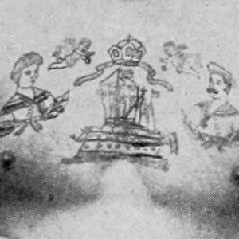
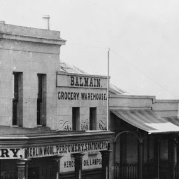
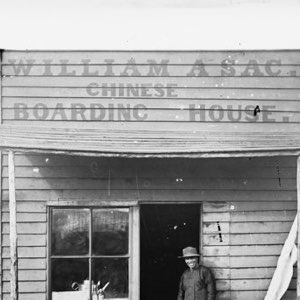
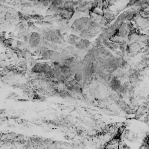

Introduction
Crimes are a reflection of the period and society in which they occur. What happened, the objects and people involved, the location, how it was recorded - or even if it was recorded - all tell us something about the values, attitudes, and power structures of the day.
This data visualisation looks at the almost 20 million words that were written in the 'New South Wales Police Gazette and Weekly Record of Crime' from the beginning of 1860 up until the end of 1900* to see what it shows about how the people, places, and things, changed in NSW over that period. But this is not a law-and-order piece, as it's not so much interested in the crimes themselves, but rather the data in aggregate, and what else is documented in the process of recording them. Changing fashions, new technologies, new modes of transport, the establishment of new towns, increasing wealth, all this is recorded in the gazette - along with the racism of the day - as a by-product of reporting the crimes (and other police matters) that occurred. For example, what objects were valued enough (and existed at the time) in order to be stolen? How did people dress, both those committing the (alledged) crimes, and the items of clothing that were stolen? Where did people live? What materials were in use? What modes of transport were used? Crime as a proxy for societal change.
Disclaimer
This project merely counts the number of times certain words and phrases appear in the gazette in a given year, so it's obviously a massive oversimplification of what's actually occurring over the period . On top of that, with few exceptions it doesn’t check for duplicates, typos, nor exclude notices in the gazette that refer to incidents from interstate. Also, given the text used is the result of optical character recognition (OCR), and the original documents themselves are old, there's also - understandably - a number of errors in the original conversion ('G' mistaken for 'C', 'f' for 't', '3' for '8' etc, and vice versa).
Plus, over four decades, spellings change, as do the terms used, as well as the names of places, so all that's shown here should be taken with a grain of salt (and the ones with fewer mentions even more so). That said, although this approach has its shortcomings, it can be an effective way to provide a quick overview of large datasets, especially for terms that have a higher frequency. For example, below you can see the popularity of the moustache throughout the 1880s and early 90s, how the town of Gulgong flourished during the gold rush years, and how the cabbagetree hat - one of the first distinctively Australian hats - became less popular over time:
For this project, the terms have been roughly grouped into People, Places, and Things.
* The gazette was printed up until 1930, but this project only looks at the period from 1860 up until federation.
Note: Most of the photos used in this project are from the library's Holtermann collection.
- People
- Places
- Things
- Peak year
About the gazette
The gazette was initially called 'Reports of Crime, etc., etc., for Police Information' and was bi-weekly, published on Mondays and Thursdays, from 1860 (the earliest digitised issue the library seems to have is #45 from Monday 4th of June, 1860). The first issue under the title 'New South Wales Police Gazette and Weekly Record of Crime' was published Wednesday 5th of March, 1862, and was roughly weekly from then on.
The gazette published a range of information relevant to the NSW police force, such as promotions, police dismissed from the force, released prisoners, deserters, corrections and updates to previous issues, as well as occasional supplements from other government gazettes. But the bulk is to do with the crimes committed and the often evocative descriptions of the (alleged) perpetrator(s) that follow. A typical record of a crime will follow a similar format and note what occurred, the rough time and date (if known), the location, as well as if there was a reward.
The general approach
The approach was quite simple: count how many times a word or phrase (known as an n-gram) appears in a given year, and see how that changes over time. I didn't look for context, so with few exceptions the code makes no distinction between whether, for example, it was a Panama hat that was stolen, or the Panama hat was worn by the (alleged) suspect.
The fact that a Panama hat was mentioned, showed that a) it was around at the time and b) valued enough to be either worn or stolen.
The same approach was taken with places: it didn't matter whether the crime took place in Dubbo, or the person was originally from Dubbo, or the person was ultimately sentenced in Dubbo, merely that the 'Dubbo' appeared in the gazette in a given year.
All that matters is the fact that the particular word or phrase occurred in a given year. These tallies are then normalised against the total number of words in the gazette for that year, so that words or phrases that appear in years where more crimes and events were recorded (and hence there's more words) aren't given undue weight. The results are then graphed to show the changes over the years.
- People
- Places
- Things
- Peak year
-

tattoo
-

Balmain
-

boarding house
-

gold
No. of words in Gazette
vs Population
This project uses the words in the gazette as a rough proxy for NSW as a whole (though as you can see, although they both increase roughly in tandem initially, the size of the gazette doesn't correspond to population size overall)
- Words in Gazette
- Population of NSW
1860s
1870s
1880s
1890s
Note: Trove only has issues of the Gazette from June 1860, so the word count for 1860 as a whole is lower, but given I'm using the ratio, rather than the count, I've treated it the same as other years. However, you will see a few cases where 1860 has a spike, and that is probably due to the fact that it doesn't reflect a full year of reporting. Historical population data via the ABS
Compare Terms
See how the rate at which an object or term is mentioned changes over the period. e.g: horses vs bicycles, or whiskers vs moustache, or diamonds vs opals, or cigars vs cigarettes, or moleskin vs serge, or public-houses vs railway stations or drunk vs talkative, or coffee vs tea, or California hats vs straw hats.
- People
- Places
- Things
vs
- Peak year
1860s
1870s
1880s
1890s
Note: scale is relative to the maximum rate of the two terms.